CODING AGENTS AS PIXEL WORLD MODELS
traex/GPT-6.1-Sol · 0007
点击播放 · 原生 RGB 像素
逐轮保存的候选
回放视频、检查图与代码变化。
每份候选均可单独播放。实际图片检查记录在下方工具轨迹中。
候选 01播放与检查图
点击播放 · 原生 RGB 像素
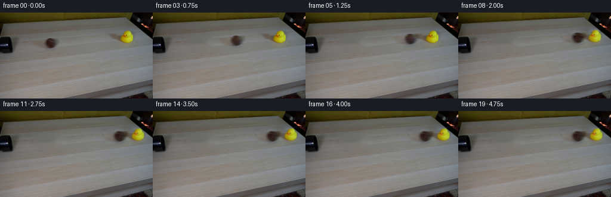
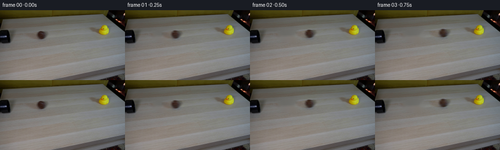
展开代码变化
--- 上一保存版本
+++ 本次保存版本
@@ -0,0 +1,143 @@
+from pathlib import Path
+import math
+import cv2
+import numpy as np
+from PIL import Image
+from artifact_io import save
+
+ROOT = Path(__file__).resolve().parent
+H, W = 144, 256
+FIRST = np.array(Image.open(ROOT / 'first_frame.png').convert('RGB'))
+YY, XX = np.mgrid[:H, :W].astype(np.float32)
+
+
+def polygon(points):
+ m = np.zeros((H, W), np.uint8)
+ cv2.fillPoly(m, [np.asarray(points, np.int32)], 255)
+ return m
+
+# Reconstruct just the small parts of the wooden surface hidden by the two
+# objects. All the other scene pixels remain the original photographic pixels.
+ball_mask = polygon([(56,45),(77,39),(99,40),(103,57),(95,65),(69,65),(55,59)])
+duck_mask = polygon([(173,32),(199,32),(205,26),(220,26),(227,36),(228,50),
+ (221,56),(203,56),(181,49),(171,37)])
+plate = cv2.inpaint(FIRST, ball_mask | duck_mask, 5, cv2.INPAINT_TELEA).astype(np.float32)
+bmask = cv2.GaussianBlur(ball_mask.astype(np.float32)/255, (0,0), 1.1)
+dmask = cv2.GaussianBlur(duck_mask.astype(np.float32)/255, (0,0), .85)
+ball_residual = (FIRST.astype(np.float32)-plate)*bmask[...,None]
+duck_residual = (FIRST.astype(np.float32)-plate)*dmask[...,None]
+
+# Split the duck's photographed silhouette from its cast shadow. This permits
+# a small contact-driven rocking motion without rotating the light source.
+silhouette = polygon([(210,30),(215,29),(220,31),(222,34),(222,36),(224,38),
+ (224,45),(222,48),(219,50),(215,51),(209,51),(205,50),
+ (202,48),(201,45),(202,41),(203,38),(205,36),(206,34),
+ (207,32)])
+# The enlarged mask contains the antialiased yellow edges as well.
+body_gate = cv2.GaussianBlur(cv2.dilate(silhouette,np.ones((3,3),np.uint8)).astype(np.float32)/255, (0,0), .65)
+duck_body = duck_residual*body_gate[...,None]
+duck_shadow = duck_residual-duck_body
+
+# Isolate the narrow pale stitch visible on the ball. The underlying cloth
+# shading and photographic soft edge are retained; only this marking rolls.
+seam_region = polygon([(78,45),(87,45),(90,46),(93,48),(92,49),(87,49),(82,48),(78,47)])
+ball_no_seam_image = cv2.inpaint(FIRST, seam_region, 2, cv2.INPAINT_NS).astype(np.float32)
+seam_gate=cv2.GaussianBlur(seam_region.astype(np.float32)/255,(0,0),.4)
+removed=(FIRST.astype(np.float32)-ball_no_seam_image)*seam_gate[...,None]
+ball_plain=ball_residual-removed
+
+
+def warp(image, center, target, angle=0., scale=1.):
+ matrix=cv2.getRotationMatrix2D(center,angle,scale)
+ matrix[0,2]+=target[0]-center[0]
+ matrix[1,2]+=target[1]-center[1]
+ return cv2.warpAffine(image,matrix,(W,H),flags=cv2.INTER_LINEAR,
+ borderMode=cv2.BORDER_CONSTANT,borderValue=0)
+
+
+# Contact at the left edge of the duck, with impulse transfer followed by
+# frictional stopping. Time is in seconds; the camera never moves.
+X0,Y0=84.25,51.05
+DX0,DY0=213.1,49.5
+XC=193.0
+V0=75.
+A0=3.8
+TC=(V0-math.sqrt(V0*V0-2*A0*(XC-X0)))/A0
+SLOPE=-.0775
+
+
+def stopped_displacement(v,a,t):
+ s=min(max(t,0.),v/a)
+ return v*s-.5*a*s*s
+
+
+def state(t):
+ if t<=TC:
+ bx=X0+V0*t-.5*A0*t*t
+ dx=0.
+ angle=0.
+ else:
+ s=t-TC
+ bx=XC+stopped_displacement(29.,63.,s)
+ dx=stopped_displacement(50.,68.,s)
+ # The soft hollow duck flexes, tips away from the impact, then rocks
+ # back into an upright resting pose. No artificial sustained motion.
+ angle=29.*math.exp(-3.5*s)*math.sin(12.5*s)
+ by=Y0+SLOPE*(bx-X0)
+ return bx,by,dx,angle
+
+
+def rolling_stitch(bx,by,scale,phase):
+ # Rotation of a stripe on a sphere, about its rolling axis. Perspective
+ # compresses the projected axis and reveals different sides of the seam.
+ rx,ry=7.65*scale,7.8*scale
+ u=(XX-bx)/rx
+ v=(YY-by)/ry
+ r2=u*u+v*v
+ z=np.sqrt(np.maximum(0,1-r2))
+ ay,az=.84,.543
+ cp,sp=math.cos(phase),math.sin(phase)
+ # Rodrigues rotation into the material coordinate frame.
+ dot=ay*v+az*z
+ qx=u*cp-(ay*z-az*v)*sp
+ qy=v*cp-az*u*sp+ay*dot*(1-cp)
+ qz=z*cp+ay*u*sp+az*dot*(1-cp)
+ distance=qy+.47*qz-.11*qx*qx
+ visible=(r2<.97).astype(np.float32)
+ intensity=np.exp(-.5*(distance/.055)**2)*visible*np.clip(z/.45,0,1)
+ # A blurred, low-contrast cloth stitch matches the source photograph.
+ seam=np.stack([10.5*intensity,13.0*intensity,17.0*intensity],axis=-1)
+ seam=cv2.GaussianBlur(seam,(0,0),.35)
+ return seam
+
+
+def render(t):
+ bx,by,shift,angle=state(t)
+ scale=1.+.00035*(bx-X0)
+ # The mark completes a rotation as the ball rolls a circumference.
+ phase=(bx-X0)/7.65
+ ball=warp(ball_plain,(X0,Y0),(bx,by),scale=scale)
+ ball+=rolling_stitch(bx,by,scale,phase)
+ sy=SLOPE*shift
+ shadow=warp(duck_shadow,(DX0,DY0),(DX0+shift,DY0+sy))
+ body=warp(duck_body,(DX0,DY0),(DX0+shift,DY0+sy),angle=-angle)
+ # The objects do not interpenetrate; at impact the ball remains to the
+ # left of the duck, at the same tabletop height.
+ return np.clip(plate+ball+shadow+body,0,255)
+
+
+def main():
+ frames=[FIRST.copy()]
+ for i in range(1,20):
+ t=i/4.
+ # Short photographic shutter, sampled analytically. The first image
+ # already has a softly blurred rolling ball; maintain that character.
+ samples=[render(t+offset) for offset in (-.009,0.,.009)]
+ frames.append(np.round(np.mean(samples,axis=0)).astype(np.uint8))
+ frames=np.stack(frames)
+ assert np.array_equal(frames[0],FIRST)
+ save(frames,ROOT)
+
+
+if __name__=='__main__':
+ main()
候选 02播放与检查图
点击播放 · 原生 RGB 像素

展开代码变化
--- 上一保存版本
+++ 本次保存版本
@@ -82,7 +82,7 @@
dx=stopped_displacement(50.,68.,s)
# The soft hollow duck flexes, tips away from the impact, then rocks
# back into an upright resting pose. No artificial sustained motion.
- angle=29.*math.exp(-3.5*s)*math.sin(12.5*s)
+ angle=29.*math.exp(-3.3*s)*math.sin(8.0*s)
by=Y0+SLOPE*(bx-X0)
return bx,by,dx,angle
@@ -123,7 +123,10 @@
body=warp(duck_body,(DX0,DY0),(DX0+shift,DY0+sy),angle=-angle)
# The objects do not interpenetrate; at impact the ball remains to the
# left of the duck, at the same tabletop height.
- return np.clip(plate+ball+shadow+body,0,255)
+ ball_alpha=np.clip((1.-np.sqrt(((XX-bx)/(7.65*scale))**2+
+ ((YY-by)/(7.8*scale))**2))/.15,0,1)
+ ball_alpha=cv2.GaussianBlur(ball_alpha,(0,0),.5)
+ return np.clip(plate+ball+shadow*(1.-ball_alpha[...,None])+body,0,255)
def main():
候选 03播放与检查图
点击播放 · 原生 RGB 像素

展开代码变化
代码未变化；重新保存了产物。
可观测工具轨迹
实际执行的命令与返回图片。
命令 1exit 0
/bin/bash -lc 'ls -la && cat prompt.txt && cat GENERATION_RULES.md'
命令 2exit 0
/bin/bash -lc "cat artifact_io.py && python - <<'PY'
from PIL import Image
im=Image.open('first_frame.png'); print(im.size); im.resize((1024,576)).save('.tmp/enlarged.png')
PY"命令 3exit 0
/bin/bash -lc "python - <<'PY'
from PIL import Image
im=Image.open('first_frame.png')
im.crop((65,34,102,69)).resize((444,420)).save('.tmp/ball.png')
im.crop((187,24,229,57)).resize((504,396)).save('.tmp/duck.png')
PY"命令 4exit 0
/bin/bash -lc "python - <<'PY' import importlib.util for x in ['cv2','numpy','scipy','PIL']: print(x, bool(importlib.util.find_spec(x))) PY"
命令 5exit 0
/bin/bash -lc "python - <<'PY'
from PIL import Image
import numpy as np
im=np.array(Image.open('first_frame.png'))
for y in [43,45,48,51,54,57,60]:
print(y, [(x,im[y,x].tolist()) for x in [74,77,80,83,86,89,92,95,100]])
PY"命令 6exit 0
/bin/bash -lc "cat > .tmp/test_plate.py <<'PY'
import numpy as np, cv2
from PIL import Image
im=np.array(Image.open('first_frame.png'))
y,x=np.mgrid[:144,:256]
m=np.zeros((144,256),np.uint8)
cv2.ellipse(m,(84,52),(17,13),0,0,360,255,-1)
cv2.fillPoly(m,[np.array([[181,36],[198,36],[204,29],[220,27],[225,38],[226,49],[221,54],[202,55],[190,50],[179,42]],np.int32)],255)
for rad in [3,5,7]:
out=cv2.inpaint(im,m,rad,cv2.INPAINT_TELEA)
Image.fromarray(out).resize((1024,576)).save('.tmp/plate%s.png'%rad)
PY
python .tmp/test_plate.py"命令 7exit 0
/bin/bash -lc "python - <<'PY'
from PIL import Image
import numpy as np
im=np.array(Image.open('first_frame.png'))
for y in range(39,62):
print(y, ' '.join('%3d'%np.mean(im[y,x]) for x in range(72,98)))
PY"命令 8exit 0
/bin/bash -lc "cat > .tmp/test_plate2.py <<'PY'
import cv2, numpy as np
from PIL import Image
im=np.array(Image.open('first_frame.png'))
ball=np.zeros((144,256),np.uint8)
cv2.fillPoly(ball,[np.array([[56,45],[77,39],[99,40],[103,57],[95,65],[69,65],[55,59]],np.int32)],255)
duck=np.zeros_like(ball)
cv2.fillPoly(duck,[np.array([[179,32],[200,33],[206,27],[220,26],[226,37],[228,50],[221,56],[203,57],[186,50],[177,40]],np.int32)],255)
mask=ball|duck
for meth in ['telea','ns','clone']:
if meth=='telea': out=cv2.inpaint(im,mask,5,cv2.INPAINT_TELEA)
if meth=='ns': out=cv2.inpaint(im,mask,5,cv2.INPAINT_NS)
if meth=='clone':
out=im.copy()
for m,dx,dy in [(ball,50,-6),(duck,-43,5)]:
donor=cv2.warpAffine(im,np.float32([[1,0,-dx],[0,1,-dy]]),(256,144),flags=cv2.INTER_LINEAR,borderMode=cv2.BORDER_REFLECT)
x,y,w,h=cv2.boundingRect(m)
out=cv2.seamlessClone(donor,out,m,(x+w//2,y+h//2),cv2.NORMAL_CLONE)
Image.fromarray(out).resize((1024,576)).save('.tmp/plate2_%s.png'%meth)
PY
python .tmp/test_plate2.py"命令 9exit 0
/bin/bash -lc "cat > .tmp/render_ball.py <<'PY'
import numpy as np,cv2
from PIL import Image
im=np.array(Image.open('first_frame.png')).astype(float)
S=4
Y,X=np.mgrid[:144*S,:256*S].astype(float);X=(X+.5)/S-.5;Y=(Y+.5)/S-.5
u=(X-84.2)/7.6;v=(Y-51.1)/7.8;r2=u*u+v*v;z=np.sqrt(np.clip(1-r2,0,1))
a=(r2<=1).astype(float)
light=np.clip(.35*u-.65*v+.68*z,0,1)
shade=.62+.5*light
c=np.array([54,31,23])[None,None,:]*shade[...,None]
# broad blurred seam
seam=np.exp(-((v+.4+0.17*u*u)/.04)**2)*((z>.35)&(u>-.75)&(u<.7))
c=c*(1-.36*seam[...,None])+np.array([83,76,76])[None,None,:]*.36*seam[...,None]
prem=c*a[...,None]
prem=cv2.GaussianBlur(prem,(0,0),.6*S);a=cv2.GaussianBlur(a,(0,0),.6*S)
out=cv2.resize(im,(256*S,144*S))*(1-a[...,None])+prem
out=cv2.resize(out,(256,144),interpolation=cv2.INTER_AREA).clip(0,255).astype('uint8')
Image.fromarray(out).crop((65,34,102,69)).resize((444,420)).save('.tmp/ball_render.png')
PY
python .tmp/render_ball.py"命令 10exit 0
/bin/bash -lc "cat > .tmp/test_sprite.py <<'PY'
import cv2,numpy as np
from PIL import Image
im=np.array(Image.open('first_frame.png'))
y,x=np.mgrid[:144,:256]
bm=np.zeros((144,256),np.uint8);cv2.fillPoly(bm,[np.array([[56,45],[77,39],[99,40],[103,57],[95,65],[69,65],[55,59]],np.int32)],255)
dm=np.zeros_like(bm);cv2.fillPoly(dm,[np.array([[170,31],[198,32],[204,26],[220,26],[226,36],[227,50],[221,55],[203,56],[180,49],[168,36]],np.int32)],255)
plate=cv2.inpaint(im,bm|dm,5,cv2.INPAINT_TELEA).astype(float)
# feather masks except extend enough to capture all antialiasing/shadow
ball=cv2.GaussianBlur((bm/255).astype(float),(0,0),1.1)
duck=cv2.GaussianBlur((dm/255).astype(float),(0,0),.8)
resB=(im-plate)*ball[...,None];resD=(im-plate)*duck[...,None]
M=np.float32([[1,0,64],[0,1,-5]])
out=plate+cv2.warpAffine(resB,M,(256,144))+resD
Image.fromarray(np.clip(out,0,255).astype('uint8')).resize((1024,576)).save('.tmp/sprite_test.png')
PY
python .tmp/test_sprite.py"命令 11exit 0
/bin/bash -lc "cat > generate.py <<'PY'
from pathlib import Path
import math
import cv2
import numpy as np
from PIL import Image
from artifact_io import save
ROOT = Path(__file__).resolve().parent
H, W = 144, 256
FIRST = np.array(Image.open(ROOT / 'first_frame.png').convert('RGB'))
YY, XX = np.mgrid[:H, :W].astype(np.float32)
def polygon(points):
m = np.zeros((H, W), np.uint8)
cv2.fillPoly(m, [np.asarray(points, np.int32)], 255)
return m
# Reconstruct just the small parts of the wooden surface hidden by the two
# objects. All the other scene pixels remain the original photographic pixels.
ball_mask = polygon([(56,45),(77,39),(99,40),(103,57),(95,65),(69,65),(55,59)])
duck_mask = polygon([(173,32),(199,32),(205,26),(220,26),(227,36),(228,50),
(221,56),(203,56),(181,49),(171,37)])
plate = cv2.inpaint(FIRST, ball_mask | duck_mask, 5, cv2.INPAINT_TELEA).astype(np.float32)
bmask = cv2.GaussianBlur(ball_mask.astype(np.float32)/255, (0,0), 1.1)
dmask = cv2.GaussianBlur(duck_mask.astype(np.float32)/255, (0,0), .85)
ball_residual = (FIRST.astype(np.float32)-plate)*bmask[...,None]
duck_residual = (FIRST.astype(np.float32)-plate)*dmask[...,None]
# Split the duck's photographed silhouette from its cast shadow. This permits
# a small contact-driven rocking motion without rotating the light source.
silhouette = polygon([(210,30),(215,29),(220,31),(222,34),(222,36),(224,38),
(224,45),(222,48),(219,50),(215,51),(209,51),(205,50),
(202,48),(201,45),(202,41),(203,38),(205,36),(206,34),
(207,32)])
# The enlarged mask contains the antialiased yellow edges as well.
body_gate = cv2.GaussianBlur(cv2.dilate(silhouette,np.ones((3,3),np.uint8)).astype(np.float32)/255, (0,0), .65)
duck_body = duck_residual*body_gate[...,None]
duck_shadow = duck_residual-duck_body
# Isolate the narrow pale stitch visible on the ball. The underlying cloth
# shading and photographic soft edge are retained; only this marking rolls.
seam_region = polygon([(78,45),(87,45),(90,46),(93,48),(92,49),(87,49),(82,48),(78,47)])
ball_no_seam_image = cv2.inpaint(FIRST, seam_region, 2, cv2.INPAINT_NS).astype(np.float32)
seam_gate=cv2.GaussianBlur(seam_region.astype(np.float32)/255,(0,0),.4)
removed=(FIRST.astype(np.float32)-ball_no_seam_image)*seam_gate[...,None]
ball_plain=ball_residual-removed
def warp(image, center, target, angle=0., scale=1.):
matrix=cv2.getRotationMatrix2D(center,angle,scale)
matrix[0,2]+=target[0]-center[0]
matrix[1,2]+=target[1]-center[1]
return cv2.warpAffine(image,matrix,(W,H),flags=cv2.INTER_LINEAR,
borderMode=cv2.BORDER_CONSTANT,borderValue=0)
# Contact at the left edge of the duck, with impulse transfer followed by
# frictional stopping. Time is in seconds; the camera never moves.
X0,Y0=84.25,51.05
DX0,DY0=213.1,49.5
XC=193.0
V0=75.
A0=3.8
TC=(V0-math.sqrt(V0*V0-2*A0*(XC-X0)))/A0
SLOPE=-.0775
def stopped_displacement(v,a,t):
s=min(max(t,0.),v/a)
return v*s-.5*a*s*s
def state(t):
if t<=TC:
bx=X0+V0*t-.5*A0*t*t
dx=0.
angle=0.
else:
s=t-TC
bx=XC+stopped_displacement(29.,63.,s)
dx=stopped_displacement(50.,68.,s)
# The soft hollow duck flexes, tips away from the impact, then rocks
# back into an upright resting pose. No artificial sustained motion.
angle=29.*math.exp(-3.5*s)*math.sin(12.5*s)
by=Y0+SLOPE*(bx-X0)
return bx,by,dx,angle
def rolling_stitch(bx,by,scale,phase):
# Rotation of a stripe on a sphere, about its rolling axis. Perspective
# compresses the projected axis and reveals different sides of the seam.
rx,ry=7.65*scale,7.8*scale
u=(XX-bx)/rx
v=(YY-by)/ry
r2=u*u+v*v
z=np.sqrt(np.maximum(0,1-r2))
ay,az=.84,.543
cp,sp=math.cos(phase),math.sin(phase)
# Rodrigues rotation into the material coordinate frame.
dot=ay*v+az*z
qx=u*cp-(ay*z-az*v)*sp
qy=v*cp-az*u*sp+ay*dot*(1-cp)
qz=z*cp+ay*u*sp+az*dot*(1-cp)
distance=qy+.47*qz-.11*qx*qx
visible=(r2<.97).astype(np.float32)
intensity=np.exp(-.5*(distance/.055)**2)*visible*np.clip(z/.45,0,1)
# A blurred, low-contrast cloth stitch matches the source photograph.
seam=np.stack([10.5*intensity,13.0*intensity,17.0*intensity],axis=-1)
seam=cv2.GaussianBlur(seam,(0,0),.35)
return seam
def render(t):
bx,by,shift,angle=state(t)
scale=1.+.00035*(bx-X0)
# The mark completes a rotation as the ball rolls a circumference.
phase=(bx-X0)/7.65
ball=warp(ball_plain,(X0,Y0),(bx,by),scale=scale)
ball+=rolling_stitch(bx,by,scale,phase)
sy=SLOPE*shift
shadow=warp(duck_shadow,(DX0,DY0),(DX0+shift,DY0+sy))
body=warp(duck_body,(DX0,DY0),(DX0+shift,DY0+sy),angle=-angle)
# The objects do not interpenetrate; at impact the ball remains to the
# left of the duck, at the same tabletop height.
return np.clip(plate+ball+shadow+body,0,255)
def main():
frames=[FIRST.copy()]
for i in range(1,20):
t=i/4.
# Short photographic shutter, sampled analytically. The first image
# already has a softly blurred rolling ball; maintain that character.
samples=[render(t+offset) for offset in (-.009,0.,.009)]
frames.append(np.round(np.mean(samples,axis=0)).astype(np.uint8))
frames=np.stack(frames)
assert np.array_equal(frames[0],FIRST)
save(frames,ROOT)
if __name__=='__main__':
main()
PY
python generate.py"命令 12exit 0
/bin/bash -lc "python - <<'PY'
from PIL import Image,ImageDraw
out=Image.new('RGB',(1024,720))
for j,i in enumerate([0,1,5,6,7,8]):
im=Image.open('frames/%02d.png'%i)
cr=im.crop((150,20,254,72)).resize((512,240))
out.paste(cr,((j%2)*512,(j//2)*240))
ImageDraw.Draw(out).text(((j%2)*512+4,(j//2)*240+4),str(i),fill='white')
out.save('.tmp/contact.png')
PY"命令 13exit 0
/bin/bash -lc "python generate.py && python - <<'PY'
from PIL import Image
import numpy as np
assert np.array_equal(np.array(Image.open('frames/00.png')),np.array(Image.open('first_frame.png')))
a=np.load('pixels.npz')['pixels'];print('Artifact:',a.shape,a.dtype)
out=Image.new('RGB',(1040,260))
for j,i in enumerate([5,6,7,8]):
im=Image.open('frames/%02d.png'%i).crop((180,25,245,70)).resize((260,180))
out.paste(im,(j*260,0))
out.save('.tmp/final_contact.png')
PY"视觉工具实际返回图片 1
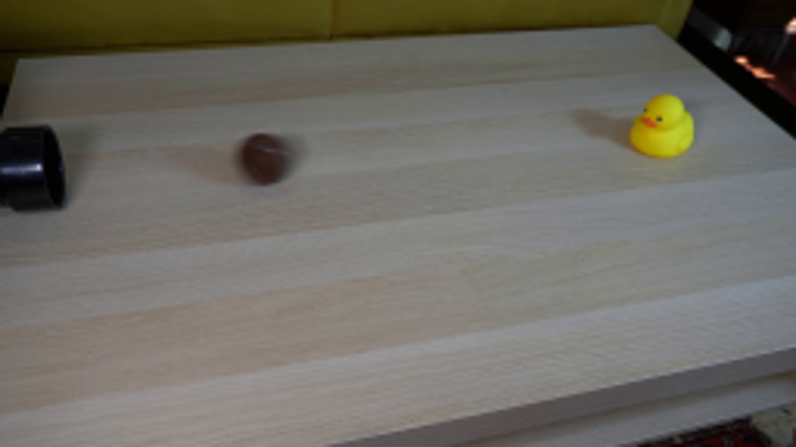
视觉工具实际返回图片 2
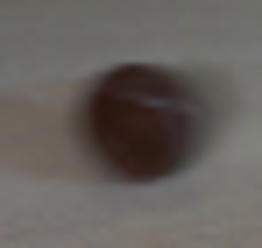
视觉工具实际返回图片 3
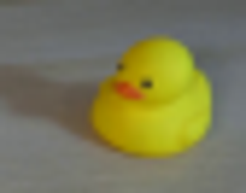
视觉工具实际返回图片 4
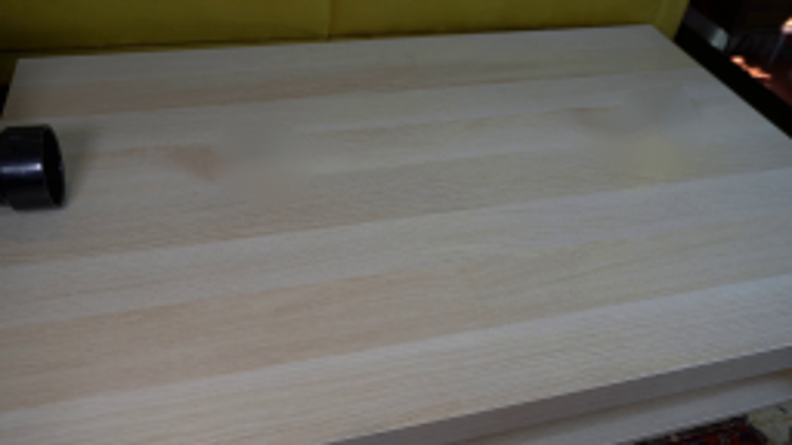
视觉工具实际返回图片 5
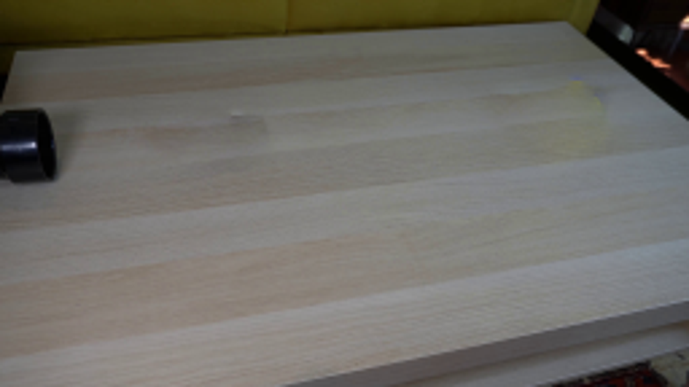
视觉工具实际返回图片 6
视觉工具实际返回图片 7
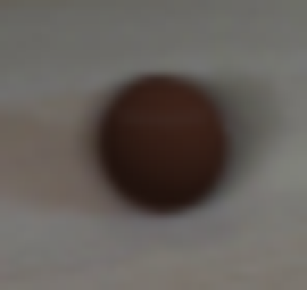
视觉工具实际返回图片 8
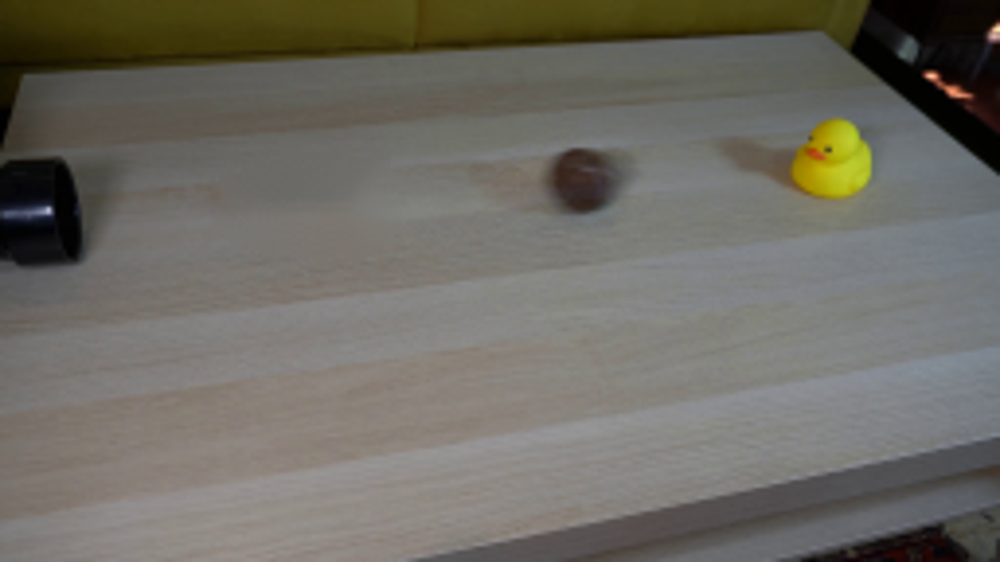
视觉工具实际返回图片 9

视觉工具实际返回图片 10
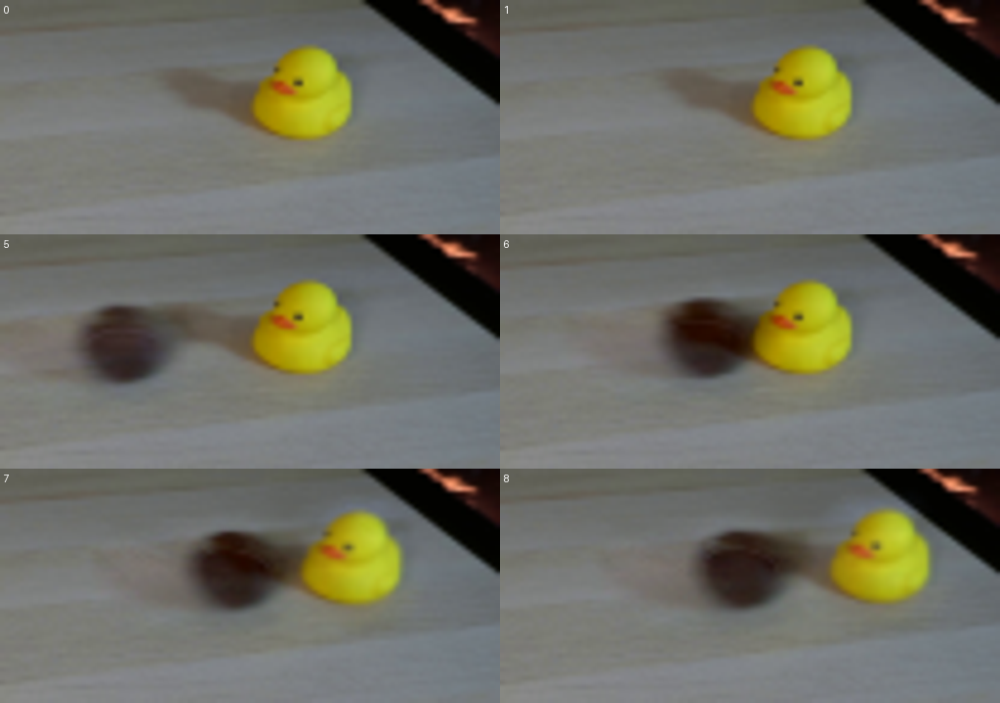
视觉工具实际返回图片 11
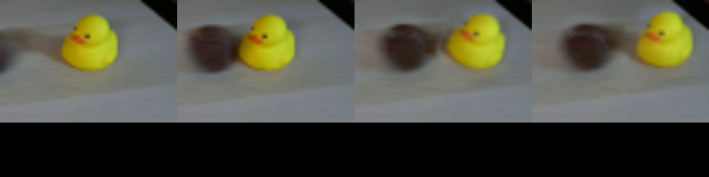
保存候选 4 份；完成命令 13 次；可验证图片返回 11 张。原始 API 响应与完整日志保留在本地。